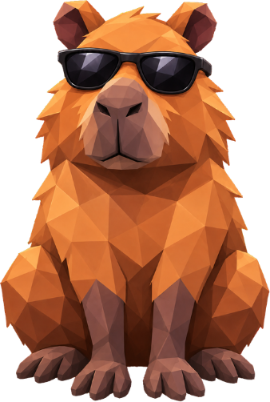

Ache as capivaras
Encontre as capivaras escondidas no gramado usando só lógica. Um puzzle relaxante com 200 fases, capivaras pra colecionar e baús do tesouro pra caçar. Grátis, em português e inglês.